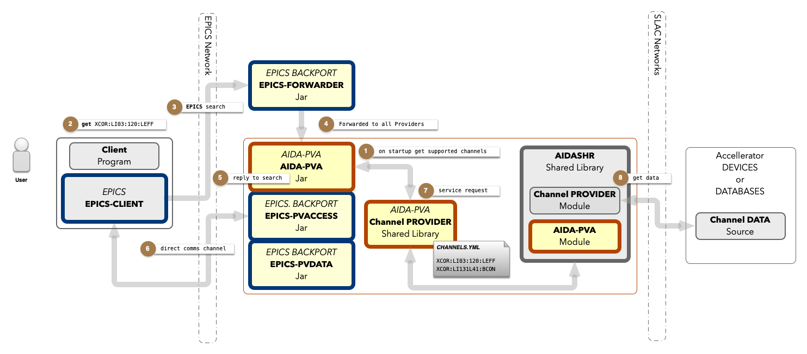
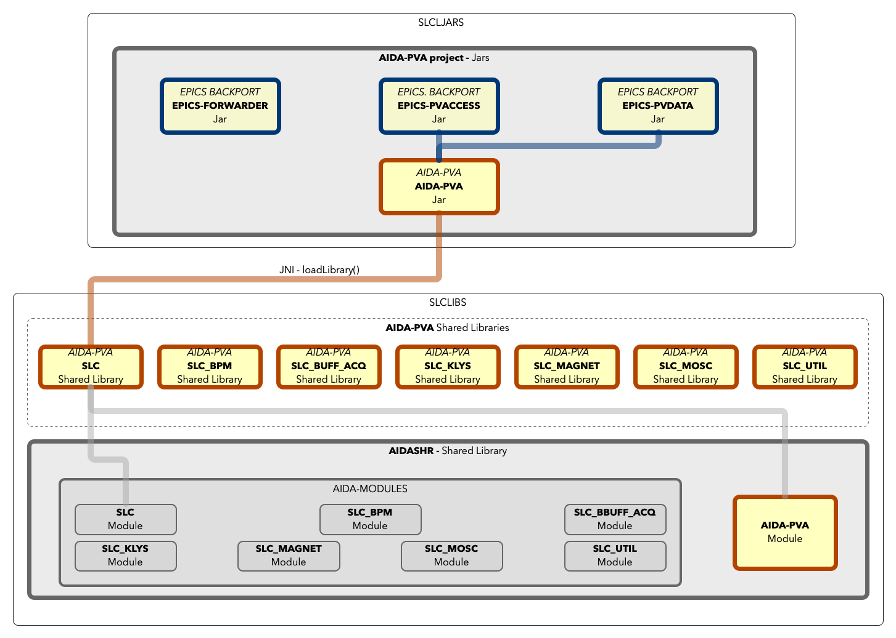

|
AIDA-PVA 2.0
AIDA-PVA is the latest version of the AIDA framework. Built on top of EPICS 7 it enables client applications to programmatically access and manage any device or database on the SLAC Network using simple channel names.
|
|
AIDA-PVA 2.0
AIDA-PVA is the latest version of the AIDA framework. Built on top of EPICS 7 it enables client applications to programmatically access and manage any device or database on the SLAC Network using simple channel names.
|
AIDA-PVA provides a framework for Channel Providers to service requests for Channels that they support. A Channel is an EPICS term, co-opted by AIDA-PVA, to mean any identifiable source of data in any Channel Data Source on the SLAC Network.
All AIDA-PVA Channels use a standard notation:
channel := part ':' second_part [ ':' other_part ... ]
a set of at least two parts separated by colons.
The framework has five main features.
Channel Requests using EPICS' PVAccess, through the AIDA-PVA Service to the registered Channel Provider endpoints.AIDASHR, to allow Channel Provider code to leverage legacy Channel Provider Modules for accessing devices, databases and other services from Channel Data Sources on the SLAC Network.Channel Provider starts up, the AIDA-PVA process that started it will read the CHANNELS.YML file that you've provided to determine which EPICS search requests it should respond to.EPICS Forwarder that is constantly listening for requests will forward it to all the AIDA-PVA processes running in VMS.Channel Provider to service the request and will return the results you give it.
As an AIDA-PVA Service Provider writer you will be responsible for:
Channel Provider Shared Library.CHANNELS.YML file that identifies and describes all the AIDA-PVA Channels that your Channel Provider will support.SLC<provider_name>.EXE shared Libraryaida-pva.jar, that loads the Provider Codeepics-pvaccess.jarepics-pvdata.jarepics-forwarder.jar
see Normative Types
There are three things to write before you can compile, run, test and deploy your service. Here
CHANNELS.YML fileChannel ProviderDefinition of the Channels supported by your Channel Service Provider is done in the CHANNELS.YML file. If you're unfamiliar with the the YAML format you can familiarise yourself with the syntax and format before reading further.
Please read documentation on the CHANNELS.YML file for information on how to create one. An example configuration file is shown below:
Thanks to the AIDA-PVA Module creating a service provider is easy. There is only one file to write and here is the code template.
For any of the types that your Channel Provider will support you need to remove the corresponding STUB line and replace it with the implementation. You'll find the prototypes below:
The AIDA-PVA Module is a module contained in the AIDASHR shared library that provides all the boilerplate functionality needed to respond to get and set requests, marshal and unmarshal objects, and simple types across the JNI boundary and between your Channel Provider and VMS and the Channel Provider module in AIDASHR.
These are defined in aida_types.h but are automatically loaded by including aida_server_helper.c.
This enumerated type will be used throughout your code to identify the data types you are manipulating.
Normally you will never implement this endpoint but if you want to, you will need these three types:
ConfigLayoutFieldConfig As you can see this type allows you to specify everything you need to configure either a getter or a setter for a channel.
Layout
The Layout allows you to specify table orientation in the rare case you don't want the default COLUMN_MAJOR table orientation.
Field
The Field allows you to specify any fields in any table you define.
When your endpoints are called, the framework passes them Arguments and Values. The following types are defined for you. The helper functions presented later make knowledge of these details irrelevant but here they are for your edification.
Value This is passed to you when one of the arguments name is VALUE. It will contain the value as specified in the argument field but also a pre-parsed json structure if the argument value was properly formatted json.
This structure is used when processing requests that require tables.
To process data in any scalar array endpoint you need to use the following structures. As with other data types you won't need to manipulate them directly as helper functions obviate the need.
This section describes the macros that are defined to make your life easier.
Synopsis
Details
Reads data from the given arguments and stores them according to parameter format into the locations given by the additional arguments, as if scanf was used, but reading from arguments instead of the standard input (stdin).
The additional arguments should point to already allocated objects of the type specified by their corresponding format specifier. For strings and arrays only the pointer needs to be pre-allocated - not the data that the pointer will reference.
The only space allocated by this function is for strings, and arrays. You need to free those when you're done.
In this example, only the provided pointer needs to be freed as only one allocation is made:
There are a number of other differences from scanf which are best described by example:
Scan into simple variable
You must always provide the name of the variable and the pointer to the place to put the value in pairs
Optional arguments Optional arguments are specified with the o character before the format character.
By default all arguments are considered required unless this character is specified. For optional arguments the pointer provided must point to the default value. In the case of arrays and strings this will be copied into allocated storage that will need to be freed as normal. i.e. strings themselves don't need to be freed.
Variable Names
You can specify simple variable names
You can specify the name as json.foo.bar to retrieve the 0 value *
You can specify the name as jsonArray[1].bar to retrieve the 20 value
value in the call, the avscanf() function will use the supplied value to get the data for that parameterFormat Specifiers
Supported formats specifiers
d : int * - extract an integer into the corresponding variable (see l & h below).u : unsigned int * - extract an unsigned integer into the corresponding variable (see l & h below)f : float *` - extract a floating point number (see `l` below)`s` :char *- extract a string of characters into allocated space and point the corresponding variable to it -c:char * - extract a single character into the corresponding variableRequired flag
o - optional precede the format with o to indicate that the argument is optionalPrefixes
h - short * - preceding d will retrieve a short e.g. hdl - long *, double * - preceding d will retrieve a long e.g. ld, preceding f will retrieve a double e.g. lfSuffixes
a - extract an array of the preceding type into a block of allocated space and point the corresponding variable to it. the variable will have an extra level of indirection than the non-array version e.g. d, int * becomes da , int **Parameters:
env - just pass in the env parameter that your endpoint was given by the frameworkarguments - arguments that the function processes as its source to retrieve the data.value value that the function processes as its source to retrieve the dataformatString C string that contains a format string as described above... Depending on the format string, the function may expect a sequence of additional arguments, containing pairs of names and pointers to allocated storage (except as indicated above), where the interpretation of the extracted data is stored with the appropriate type. There should be at least as many pairs of these arguments as the number of values stored by the format specifiers. Additional arguments are ignored by the function | MissingRequiredArgument | if one of the required arguments are missing |
If order to return a table you need to do the following.
These are the list of table manipuation functions:
To implement a service (yourService) simply duplicate the Reference directories under src/cpp/build , src/cpp/impl and src/cpp/include and implement your code as appropriate to your service.
You will also need to provide a yaml file (channels.yaml) containing the channel definition which you'll place in you new src/cpp/build{yourService} directory.
From the src/cpp/build{yourService} directory, compile up the service using the build script which will deploy the library (AIDA.EXE) in the lib/{yourService} directory and copy the channels.yml file to the appropriate location.
From the lib/{yourlibrary} directory start the service with java -jar "-Djava.library.path=./" ../aida-pva.jar where {yourLibrary} is the name of the library. ` e.g.
Note that this assumes the library (EXE) is deployed in the current working directory and that the aida-pva jar is also deployed there.
Deployment is very simple.
A shaded jar has been created (aida-pva) to implement AIDA-PVA. This jar contains all the EPICS and other libraries that are required, and it is also runnable. The only thing that you need to make sure is that your native service library is available on the java library path (specified with -Djava.library.path=<path_where_service_library_resides> on the commandline). You also need to make sure that a channels.yaml file, is found in the working directory of the service.
This component will be required for EPICS on Open-VMS to workaround an issue related to multi-cast sockets in Java 1.5. It simply listens for any EPICS requests and forwards them to any listening AIDA-PVA services.

To run AIDA-PVA and tests you'll need to start the service and also use some tool to test it
aida-pva.jar - anywhere in the java classpathchannels.yml - in current working directory where you start serviceAIDA-PVA.EXE - anywhere in the java load library pathOn any site (networking terminology for a host) one EPICS Forwarder must be running.
It must be started before any AIDA-PVA services are started on that site. One, and only one, must be running.
To start the EPICS forwarded:
Note: You will see a '.' show for each request that is forwarded by the EPICS Forwarder, and a new line will start for each hour that there is at least one request. You can use this display to get an idea of the request rates.
You can start the service by executing the following command.
The foregoing assumes that all required files are in the current working directory
AIDA-PVA provides a reference service implementation. You can use this to verify your configuration before deploying your service. The reference implementation provides the following channels:
AIDA:SAMPLE:DEVICE01:attribute01 - simple booleanAIDA:SAMPLE:DEVICE01:attribute02 - simple byteAIDA:SAMPLE:DEVICE01:attribute03 - simple shortAIDA:SAMPLE:DEVICE01:attribute04 - simple integerAIDA:SAMPLE:DEVICE01:attribute05 - simple longAIDA:SAMPLE:DEVICE01:attribute06 - simple floatAIDA:SAMPLE:DEVICE01:attribute07 - simple doubleAIDA:SAMPLE:DEVICE01:attribute08 - simple stringAIDA:SAMPLE:DEVICE01:attribute11 - array of booleansAIDA:SAMPLE:DEVICE01:attribute12 - array of bytesAIDA:SAMPLE:DEVICE01:attribute13 - array of shortsAIDA:SAMPLE:DEVICE01:attribute14 - array of integersAIDA:SAMPLE:DEVICE01:attribute15 - array of longsAIDA:SAMPLE:DEVICE01:attribute16 - array of floatsAIDA:SAMPLE:DEVICE01:attribute17 - array of doublesAIDA:SAMPLE:DEVICE01:attribute18 - array of stringsAIDA:SAMPLE:DEVICE01:attribute20 - NT-TABLE : table normative-typeEach simple scalar channel additionally takes an optional parameter to showcase how parameters are parsed and used.
To test the service you can use some of the EPICS utils already deployed in SLAC.
From a different host ...
An example of using parameters follows. Note that for all the scalar types in the reference implementation an optional argument x is available. If present it will have the following effects on the results.
AIDA:SAMPLE:DEVICE01:attribute01 - simple boolean. x will be combined by logical AND with default valueAIDA:SAMPLE:DEVICE01:attribute02 - simple byte. x will be combined by bitwise-or | with default valueAIDA:SAMPLE:DEVICE01:attribute03 - simple short. x will be combined by sum + with default valueAIDA:SAMPLE:DEVICE01:attribute04 - simple integer. x will be combined by sum + with default valueAIDA:SAMPLE:DEVICE01:attribute05 - simple long. x will be combined by sum + with default valueAIDA:SAMPLE:DEVICE01:attribute06 - simple float. x will be combined by multiplication * with default valueAIDA:SAMPLE:DEVICE01:attribute07 - simple double. x will be combined by multiplication * with default valueAIDA:SAMPLE:DEVICE01:attribute08 - simple string. x will be combined by concatenation with default value